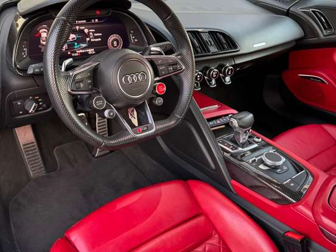
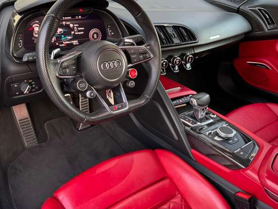

Audi R8 V10 Performance

 


Ficha técnica completa
- Motor: 5.2 L V10
- Potência: 620 cv
- Tração: Quattro (AWD)
- 0–100 km/h: ~3.1 s
Dados principais
5.2 V10 | 620 cv | R$ 2.000.000
Descrição
R8 é o supercarro com motor V10 da Audi: acabamento refinado, comportamento neutro e som inconfundível do motor aspirado.